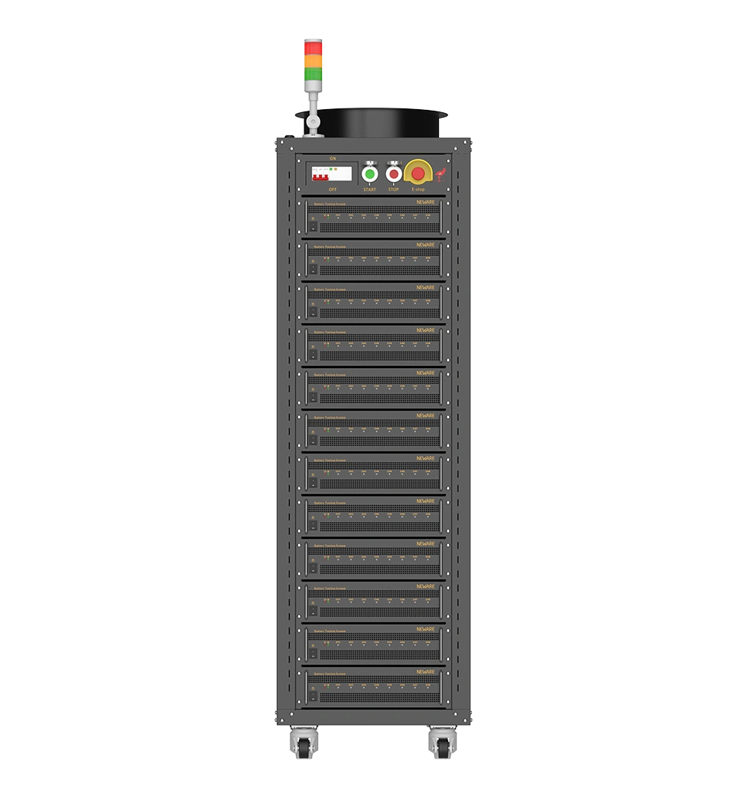

Cell testers · CT-9000 серия
CT-9000-5V15A
The reference instrument: 15 µA to 15 A across four ranges, ±0.02% FS per range, and 150 µs current response for pulse, DCIR and HPPC work that premium platforms are usually specified for.

Ячейки: монетные, мягкие, цилиндрические и призматические — от микроампер до 300 А.
| Объект испытаний | High-precision single cells |
|---|---|
| Напряжение | 0–5 V |
| Ток | 15 µA – 15 A |
| Диапазоны | 4 auto-ranges |
| Каналы | 8 per module |
| Точность | ±0.02% FS · ±3 µA (range 1) |
| Отклик по току | ≤150 µs |
| Регистрация | up to 10 kHz |
| Рекуперация | — |
Полные характеристики, свидетельства о поверке и опции конфигурации предоставляются с коммерческим предложением.
Поставка 4–8 недель